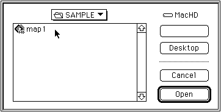
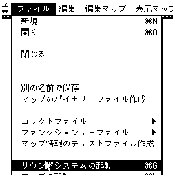
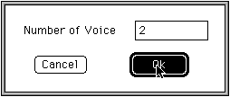
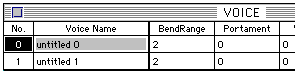
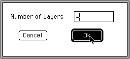
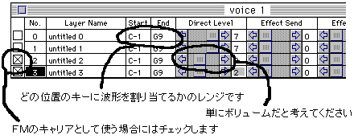
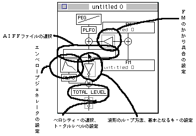
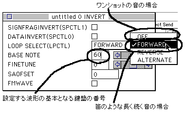
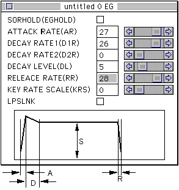
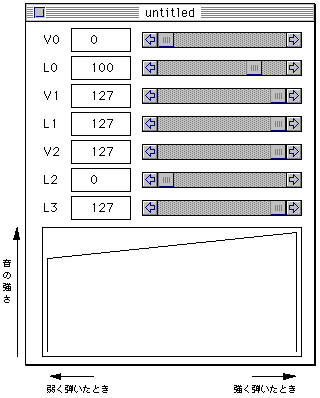

★SGL User's Manual
★SOUND TUTORIAL
★SGL User's Manual
★SOUND TUTORIAL
図2-10 マップのオープン

図2-11 「サウンドシステムの起動」の選択

図2-12 ボイスデータ数の設定

図2-13 ボイスウィンドウ

図2-14 レイヤー数の設定

図2-15 レイヤーウィンドウ

図2-16 レイヤーデータの設定

図2-17 波形情報の設定

図2-18 EG（エンベロープジェネレーター）の設定

|
Ａ：音が出始めてから、最大音量に達するまでの時間 Ｄ：最大音量から持続する音量に減衰するまでの時間 Ｓ：鍵盤を押している間、持続する時間 Ｒ：鍵盤をはなしてから、音が消えるまでの時間 |
図2-19 ベロシティーの設定

★SGL User's Manual
★SOUND TUTORIAL